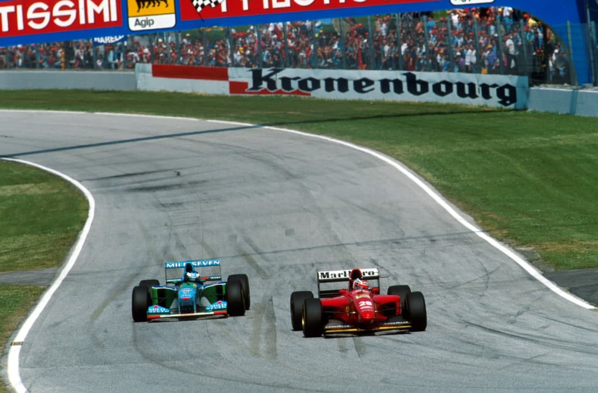
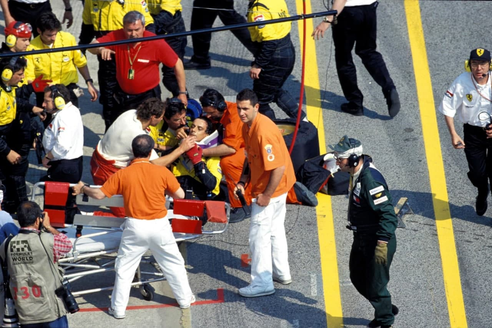
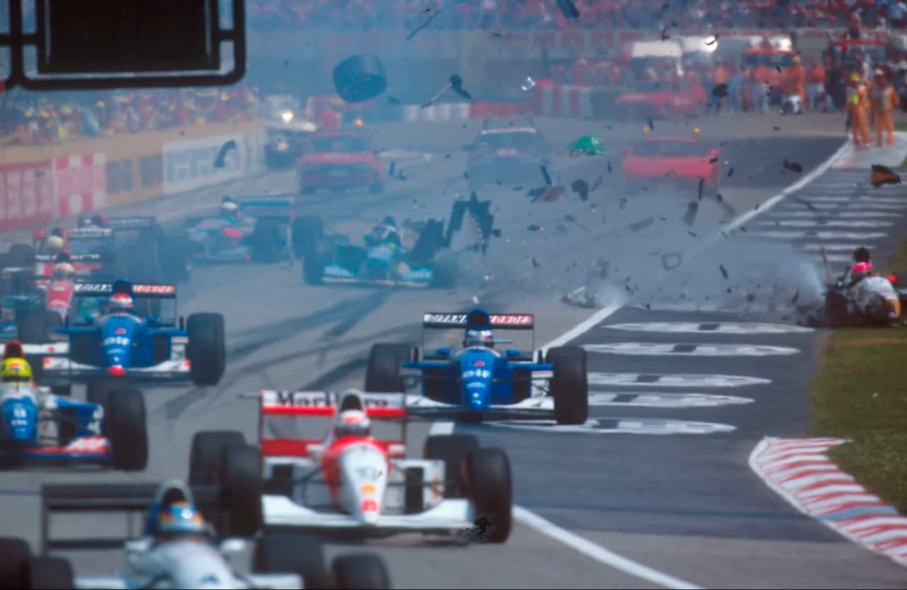
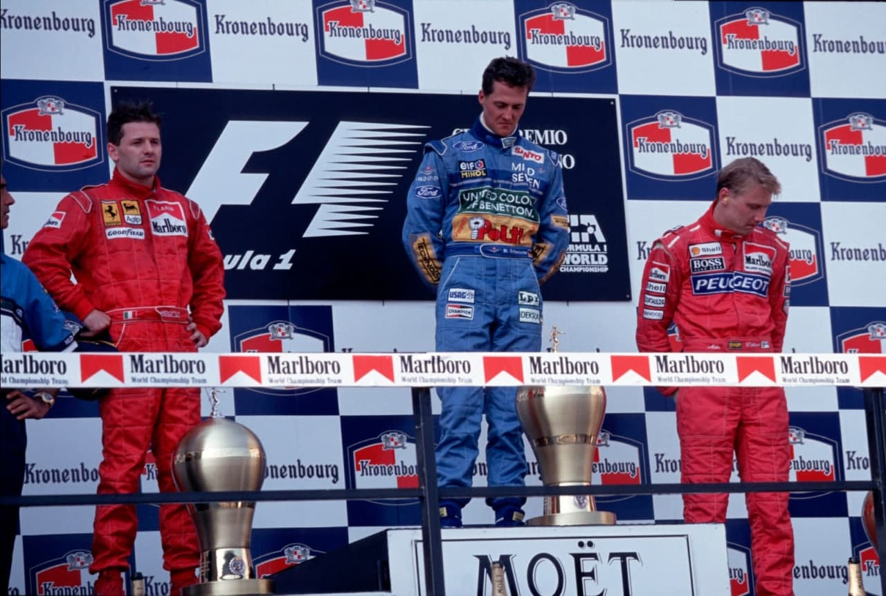

FIM DE SEMANA NEGRO

Ayrton Senna morreu na curva Tamburello. Roland Ratzenberger morreu no muro da curva Villeneuve. A Fórmula 1 viveu em Imola o dia mais triste de sua história. Schumacher venceu o 3º GP consecutivo sem obter nenhuma satisfação com seu triunfo. O GP de San Marino de 1994 foi a corrida que todos querem esquecer…
Por Francisco Santos
Ayrton Senna começou a morrer quando completou a sexta volta do GP de San Marino liderando a corrida com uma vantagem mínima sobre seu sucessor, Michael Schumacher. Algo se partiu no Williams FW16 do brasileiro quando Senna entrou na curva Tamburello pela última vez. Especulações mais científicas apostam na tese do rompimento da coluna de direção da máquina do brasileiro. Senna perdeu o controle do carro numa velocidade superior aos 310 Km/h e seguiu reto em direção ao muro. O impacto fatal aconteceu às 14hl2 no horário local. O coração de Senna parou de bater às 18h40 do dia primeiro de maio. O corpo do piloto brasileiro já estava no hospital Maggiore de Bolonha quando a sua morte foi confirmada pela médica Maria Teresa Fiambre, responsável pelo setor de terapia intensiva e reanimação do hospital bolonhês. A morte chegou em Imola na sexta-feira, dia do primeiro treino oficial de classificação do GP de San Marino, terceira etapa do mundial, uma corrida desenhada para ser a primeira vitória de Senna na temporada e seu primeiro triunfo pela equipe Williams. O primeiro aviso de que os destinos das pessoas presentes no autódromo Enzo e Dino Ferrari estaria marcado pela tragédia, veio através de um acidente envolvendo o brasileiro Rubens Barrichello. A primeira imagem do desastre coletivo apareceu na TV quando o Jordan de “Rubinho” surgiu capotado no lado externo da chicane que antecede a reta dos boxes. O replay da batida mostrou Barrichello perdendo o controle de seu carro após frear muito tarde para entrar na chicane. O Jordan decolou na “zebra”, passou voando pela grama e foi aterrisar de bico nos pneus que protegiam o guardrail levando o jovem piloto como passageiro. Barrichello perdeu a consciência no momento do impacto. Só percebeu a magnitude do acidente quando já estava no hospital do circuito recebendo os primeiros socorros. As pessoas que se acotovelavam no lado de fora do hospital só tiveram certeza que Barrichello havia escapado inteiro do acidente mais sério da sua curta carreira quando o piloto foi removido de helicóptero para o hospital de Bolonha e antes de entrar na aeronave gritou: “Avisa o Gary (Anderson, diretor técnico da Jordan) para preparar o meu carro. Amanhã eu volto”.

O segundo aviso de morte
Sentindo que seu primeiro aviso não havia ganho o respeito merecido da Fórmula 1, a morte voltou a agir. Decidiu buscar o piloto mais inexperiente e vulnerável do lote inscrito no GP de San Marino. Roland Ratzenberger foi eleito para a segunda tragédia de final de semana italiano. O austríaco morreu no muro externo da curva Villeneuve, talvez o ponto mais veloz do circuito italiano. Testemunhas garantem terem visto o bico de seu Simtek voar no meio da reta. O carro seguiu como um míssil sem controle até o impacto frontal contra o muro. Ratzenberger teve morte instantânea provocada pela fratura de sua coluna cervical. A remoção do piloto austríaco, da pista para o hospital do autódromo e de lá para o hospital Maggiore de Bolonha, foi um ato de puro teatro para iludir a justiça italiana com o objetivo de situar o hospital de Bolonha como local da morte e evitar que a pista pudesse ser fechada para investigações prejudicando o programa restante do final de semana.

Morre Ayrton Senna
Mesmo após o acidente de Ratzenberger a morte continuou sentindo a falta de respeito da Fórmula 1. Decidiu então levar o melhor piloto de todos os tempos. Levou Ayrton Senna. Muitos críticos acusam os organizadores de negligência pelo fato da corrida não ter sido interrompida após o acidente da largada, quando o português Pedro Lamy bateu no carro de J.J. Lehto, espalhando todo o tipo de detritos pelo asfalto. Os comissários mantiveram o Safety Car puxando afilados F1 por cinco voltas. Quando a prova recomeçou, e com ela a batalha de Senna contra Schumacher, os carros de corrida tinham sido expostos ao risco de ter um pneu furado por causa dos detritos. Schumacher acompanhava Senna, segundos antes do acidente e já havia identificado deficiências no equilíbrio da máquina do brasileiro. “O carro de Ayrton parecia muito nervoso naquela curva”, disse o alemão. O resto da história deste domingo maldito ficará gravado na mente de todas as pessoas que gostam de F1. Senna morreu no muro da curva Tamburello.
OS TREINOS
Ayrton Senna conquistou a 65ª e última pole-position de sua carreira ainda chocado com as imagens do acidente de Rubens Barrichello no primeiro treino oficial de classificação para o GP de San Marino. O brasileiro fez a sua volta voadora em 1m21s548 depois de ter visitado o colega no hospital do autódromo e ter saido de lá com a certeza de que Rubinho passava bem. Senna começou a corrida na pole-position contente com a revisão aerodinâmica que a Williams produziu nos FW16 e confiante em poder conquistar em Imola a sua primeira vitória na temporada. O clima seco e quente do norte da Itália favoreceu o desempenho do carro de Ayrton permitindo que o brasileiro mantivesse uma vantagem de quase meio segundo sobre seu perseguidor mais próximo. Michael Schumacher guiou no limite de seu Benetton durante todo o treino de uma hora e mesmo assim não conseguiu completar uma volta em um tempo inferior a 1m22s015. O esforço do alemão ficou comprovado quando Michael escapou com seu carro intacto de uma rodada de 360 graus na Variante Bassa. A Benetton tinha motores especiais de classificação no GP de San Marino mas a ajuda de alguns HPs extras de potência não serviu para deixar Schumacher em condições de derrotar o rei das poles na disputa pelo melhor lugar do grid de largada. Dos coadjuvantes da F1, o melhor no primeiro treino oficial acabou sendo o austríaco Gerhard Berger, que estreava em Imola um novo motor Ferrari, chamado 043 e com os cilindros inclinados em um ângulo de 75 graus. A nova usina de potência da Ferrari empurrava Berger aos 334,672 Km/h no ponto mais veloz do circuito, a entrada da curva Tosa. Apesar de força disponível no motor, Berger teve problemas na caixa de câmbio durante a sua segunda série de voltas rápidas e não teve condições técnicas para competir em igualdade de condições com os duelistas, Senna e Schumacher. Damon Hill também ficou longe dos dois mais velozes da F 1. O inglês rodou duas vezes e não conseguiu ir além do sétimo tempo no treino de sexta-feira.
O treino da primeira morte
Michael Schumacher e Damon Hill ainda tiveram tempo de melhorar suas marcas no treino final de sábado, antes do acidente que matou Roland Ratzemberger. O inglês pulou do sétimo posto no grid provisório para o quarto lugar na formação definitiva gastando quatro voltas para registrar o segundo melhor tempo do sábado, 1m22s168. Schumacher entrou na casa de 1m21s com uma sequência de três voltas onde a melhor passagem foi cronometrada em 1m21s885. Senna manteve a pole com o tempo conquistado na sexta-feira. O piloto brasileiro estava esperando pela evolução dos adversários com seu carro estacionado nos boxes quando aconteceu o acidente de Ratzemberger. Depois de ver o piloto austríaco no hospital do circuito, Ayrton ficou sem condições de sentar no carro naquele sábado. Deixou o autódromo sem falar com ninguém e voltou para o hotel. Gerhard Berger também ficou destruído com a perda do amigo austríaco. “Assim que soube do acidente voltei imediatamente para os boxes. Fui descansar no motor-home da Ferrari me sentindo enjoado. Meu corpo tremia inteiro e eu comecei a pensar se teria condições de sentar no carro outra vez. Não estava preocupado com a corrida do dia seguinte mas sim com a possibilidade de continuar a minha carreira e a minha profissão.”, disse o austríaco.

A CORRIDA
O único adversário capaz de disputar a liderança do GP de San Marino com Michael Schumacher abandonou a prova e a vida no início da 7ª das 61 voltas da corrida. Sem a presença de Ayrton Senna, o alemão teve mais um passeio dominical, somando, sem grandes dificuldades técnicas, outros dez pontos à sua coleção. Nicola Larini, substituto de Jean Alesi na Ferrari, subiu ao segundo degrau do pódio para tomar champanhe ao lado de Schumacher no melhor resultado da sua carreira. Mika Hakkinen, completou o trio vencedor em Imola com o primeiro pódio da união entre a McLaren e a Peugeot e os seus primeiros pontos na temporada de 1994. O GP das tragédias começou com Ayrton Senna pulando da pole-position para a liderança da corrida. Os carros não tinham sequer completado a primeira reta quando o público italiano voltou a viver momentos de tensão. J. J.Lehto, ficou com o seu Benetton estacionado no grid bem na hora do sinal verde. Alguns pilotos ainda tiveram tempo de desviar suas máquinas do obstáculo de cores unidas, mas o português, Pedro Lamy, com a visão encoberta, acabou acertando em cheio o carro de Lehto e mandando duas rodas de seu Lotus sobre a cerca que separa o público da pista. Apesar da pista estar repleta de detritos, o diretor da corrida optou pela continuação dos trabalhos. Enviou o “Safety Car” para puxar a filadosFl com Senna em primeiro, Schumacher em segundo e Gerhard Berger na terceira posição. A procissão continuou até o final da quinta volta. Ayrton ainda teve um giro na liderança, com Schumacher no vácuo de seu Williams, antes de entrar na sétima e última volta de sua vida. A prova acabou interrompida após o acidente de Senna. Os carros alinharam para uma nova largada com a pole-position vazia e Damon Hill alinhado apesar das dúvidas existentes sobre uma falha mecânica nos carros da equipe de Frank Williams. Os organizadores optaram então por dividir a prova em duas baterias, a primeira com as cinco voltas iniciais e a segunda com as 53 voltas realizadas após a segunda largada. O vencedor do GP de San Marino seria escolhido pela soma de tempos com Schumacher partindo para a segunda etapa da corrida da morte com uma vantagem de 3,8s sobre Berger.

Berger comanda segunda metade
A torcida da Ferrari teve um momento de ilusão e festa quando o austríaco Gerhard Berger assumiu a liderança na segunda batería da prova. Apesar de Schumacher continuar em primeiro na matemática da soma de tempos, os “tiffosi” italianos não se importavam. Uma Ferrari estava na frente. Gerhard comandou a corrida até a volta de número 10 quando Berger fez uma parada de reabastecimento e logo em seguida voltou aos boxes preocupado com o comportamento anormal de sua máquina. Sem Berger na pista, Michael passeou tranquilo na liderança, até o final do GP acompanhando de longe a evolução de Larini que fez apenas um pit-stop, na volta número 24, e por isso acabou levando o segundo lugar. Hakkinen, Karl Wendlinger, Ukyo Katayama e Damon Hill completaram a lista dos seis pilotos que marcaram pontos em Imola.

Ayrton Senna e a segurança
Ayrton Senna lutava para melhorar a segurança das pistas da Fórmula 1, liderando seus companheiros de profissão. O brasileiro tinha planos de reorganizar a GPDA, Associação de Pilotos de Grand Prix. Conversou sobre o assunto com o tricampeão Jackie Stewart durante o final de semana do último GP da Austrália. Falou também com Niki Lauda e Gerhard Berger na manhã da sua morte. Os cartolas da FIA tinham medo da capacidade de liderança de Senna. Eles avisaram Ayrton para que fosse discreto pois ainda pairava sobre o brasileiro a pena de suspensão que lhe foi imposta depois da briga com Eddie Irvine no último GP do Japão. A reação do sistema contra a vontade de Senna ficou evidente no sábado em que Ratzenberger morreu. Ayrton pegou um dos carros dos organizadores da prova e foi até o local do acidente do austríaco para inspecionar a pista. Quando voltou aos boxes encontrou os fiscais de pista com a cara fechada em estado de revolta. Horas depois, Senna recebeu uma carta dos organizadores da prova reclamando da sua “visita” ao local da morte de Ratzenberger e dizendo que a função de Ayrton na F1 era de guiar seus carros e não de ficar se preocupando com a segurança dos circuitos e organização das provas.

Rubinho e Christian
A última alegria que o GP de San Marino poderia ter deixado para os torcedores de língua portuguesa desapareceu do mapa quatro voltas antes da bandeira quadriculada, quando Fittipaldi estacionou o seu Footwork, totalmente sem freios na lateral da pista. Fittipaldi tinha largado na 16ª posição e seguido a tática de fazer a corrida com apenas uma parada de reabastecimento. Já havia feito parte da prova na 4ª colocação e mesmo sendo atacado por Hill tinha a certeza que chegaria nos pontos. A corrida do brasileiro acabou quando ele perdeu o ponto de freada na entrada da curva Tosa e saiu da pista. Christian já tinha perdido posições importantes para Karl Wendiinger e Ukyo Katayama. A derrota na disputa pessoal com Hill selou de vez as chances do brasileiro de marcar pelo menos um pontinho. “Se o freio não tivesse quebrado acho que dava até para terminar entre os quatro primeiros”, disse Fittipaldi após a prova, enquanto esperava um helicóptero que o pudesse levar até o hospital Maggiore de Bolonha, onde estava o corpo de Senna. Com Rubens Barrichello eliminado no treino de sexta-feira, Pedro Lamy acidentado na largada e Ayrton Senna morto, Fittipaldi havia sobrado com a responsabilidade de honrar as tradições do automobilismo brasileiro e português no pior GP do ano. O sobrinho de Emerson Fittipaldi fazia um trabalho à altura de sua missão quando o freio começou a falhar. Se o equipamento da Arrows tivesse um pouco mais de resistência mecânica, Fittipaldi teria deixado Imola com pelo menos um pontinho de consolação. Depois da corrida de Imola, e do enterro de Senna em São Paulo, os meninos do Brasil, Fittipaldi e Barrichello, sobraram com uma responsabilidade ainda maior sobre suas costas. Os dois são os únicos representantes de um país viciado em ganhar títulos mundiais na Fórmula 1. Ambos ficaram órfãos do ídolo Senna no mesmo dia em que lhes sobrou a missão de defender a tradição de oito campeonatos do mundo conquistados por Ayrton, Emerson e Nélson Piquet. Defendendo equipes ainda sem condições de produzirem vencedores, Rubens e Christian ficaram expostos a uma enorme pressão da mídia e da torcida de seu país. Estes precisam começar a vencer o mais depressa possível para que o público e principalmente os patrocinadores brasileiros não percam seu amor pela F1.

As causas do acidente de Senna: a eterna dúvida?
O mistério da morte de Ayrton Senna pode permanecer insolúvel para sempre. Mesmo com o inquérito oficial da justiça italiana concluido as pessoas terão sempre o direito a duvidar da investigação oficial. O fato do acidente de Ayrton ter acontecido numa curva, quase reta, onde a possibilidade de um erro humano é descartável alimenta especulações infinitas. Até a hipótese de uma manobra suicida já foi ventilada por pessoas que não entendem nada de automobilismo e muito menos de Ayrton Senna. As duas teorias mais viáveis entre as muitas formuladas sobre o acidente indicam a possibilidade de uma falha mecânica ou de um descontrole humano induzido por uma saliência na pista. Michael Schumacher disse ter visto o carro de Ayrton bater muito forte com o assoalho no asfalto na volta em que antecedeu a batida fatal. Como o circuito de Imola teve a sua pista recapeada antes do GP de San Marino num trabalho mal-feito que acabou aumentando as saliências da curva Tamburello, alguns analistas pouco conhecedores do talento de Senna chegaram a supor que um dos “bumps” teria provocado um salto no carro de Senna com consequente perda de pressão aerodinâmica e de qualquer possibilidade de controle do carro. O fato das imagens captadas pela Câmera de TV instalada no carro de Ayrton não terem sido retransmitidas para o helicóptero que alimenta o centro de televisão da FOCA com os sinais captados pelos carros e portanto não estarem disponíveis para ajudar na solução do mistério, serve apenas para complicar a busca de uma resposta. A suspeita mais confiável continua sendo a de uma quebra de direção do Williams do brasileiro. Os FW16 de Hill e Senna estavam equipados com um sistema de direção hidráulica e portanto tinham a coluna e as barras de direção confeccionadas em um diâmetro menor do que o da maioria dos outros carros. A quebra da coluna de direção do carro de Damon no GP de Mônaco que aconteceu duas semanas após a corrida de Imola reforça ainda mais a tese de uma falha no sistema de direção. Hill teve a coluna do volante de seu carro quebrada em uma batida banal contra o McLaren de Mika Hakkinen, comprovando a fragilidade do equipamento da Williams neste acidente de Ayrton e logo descartadas pela falta de consistência técnica incluíam as hipóteses de erro de pilotagem, quebra de um braço da suspensão traseira, falta de pressão suficiente nos pneus, pneus com temperatura abaixo do nível ideal, e até, suicídio. Nenhuma destas hipóteses sobreviveu ao exame dos técnicos e da justiça.

Autodrómo interditado
O autódromo Enzo & Dino Ferrari, em Imola, foi interditado pela Justiça italiana. A interdição vai vigorar até que sejam apuradas as causas dos acidentes que mataram Ayrton Senna e o austríaco Roland Ratzenberger no fim de semana do GP de San Marino. A polícia de Imola também apreendeu o capacete do piloto brasileiro e o que sobrou de seu carro, o Williams/Renault, para fazer uma perícia. Da mesma forma, o Simtek de Ratzenberger, morto nos treinos oficiais de sábado, está sob custódia da polícia local. Os destroços das duas máquinas estão trancados em garagens que ficam sob um lance de arquibancada que fica antes da reta dos boxes. Foi aberto inquérito policial e os administradores do circuito foram indiciados sob acusação de homicídio culposo. O juiz Luca Ghedini determinou a interdição do circuito. A perícia na pista começou a ser realizada às 7h locais (2h de Brasília). Até o final da tarde os peritos da polícia ainda estavam no autódromo. fazendo medições e analisando o asfalto nos pontos onde Senna e Ratzenberger bateram. A curva Tamburello, onde Senna bateu, é a primeira depois da linha de chegada. A curva Villeneuve, local do acidente de Ratzenberger, vem a seguir. O último incidente envolvendo o GP de San Marino aconteceu quando os últimos caminhões e “motorhomes” das equipes deixavam o autódromo rumo a suas sedes, a maioria delas na Inglaterra e na própria Itália. O caminhão que levava os dois carros da Pacific, time estreante no Mundial, pegou fogo na saída do circuito. Os mecânicos responsáveis pelo transporte conseguiram dominar o incêndio e ninguém se feriu. Cinco deputados italianos encaminharam ontem ao presidente do Parlamento uma interpelação urgente pedindo a suspensão do GP da Itália de F-1. Os parlamentares querem que seja “garantida a segurança de pilotos e espectadores” em Monza. Os deputados pedem que sejam apuradas as razões do acidente de Senna e, principalmente, que se explique por que a corrida foi realizada após a morte de Ratzenherger, sábado. “O acidente com o piloto austríaco mostrou que não havia segurança para a prova”, diz o texto. O prefeito de Imola, Rafaello De Brasi, defendeu-se dizendo que a pista sempre foi considerada uma das mais seguras do mundo, num debate realizado na TV. O piloto Michele Alboreto, da Minardi, nervoso, falou que o recapeamento do asfalto feito este ano foi “ridículo”. “Parece uma estrada de terra. Se o asfalto fosse perfeito, não teria havido nada na Tamburello.” O prefeito discordou, e Alboreto disparou: “Então sente num carro de corrida comigo que eu mostro como é”.
